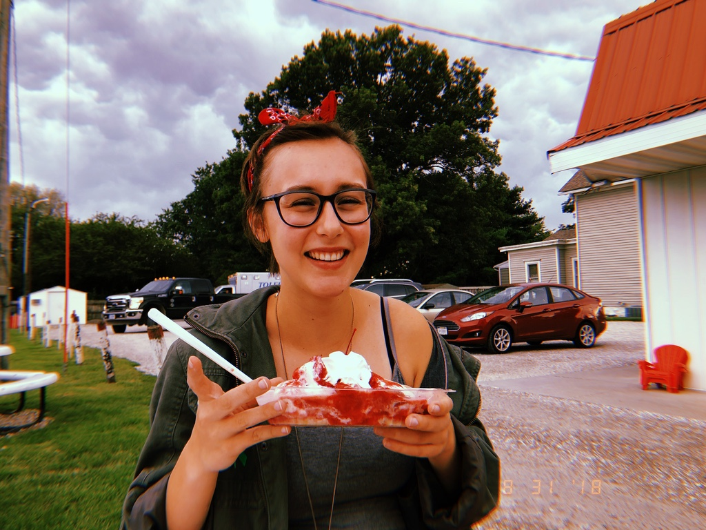

About the Coder
My name is Amanda Weber, and I am a student at Grinnell College, class of 2021. I am a declared double major in Computer Science and English. I currently work as the Treasurer of Grinnell College Student Government Association, where I balance a $550,000 budget, advise on the financing of approximately 90 student groups, and liaise between students and administration about the financial needs of the student body.
In addition to my schoolwork and job, I work as an expungement volunteer for Iowa Legal Aid, which allows me to serve the greater Iowa community and to continue pursuing my passion for making the world a better place. In my free time, I like to write creatively, read, play tennis, and experiment with code.
